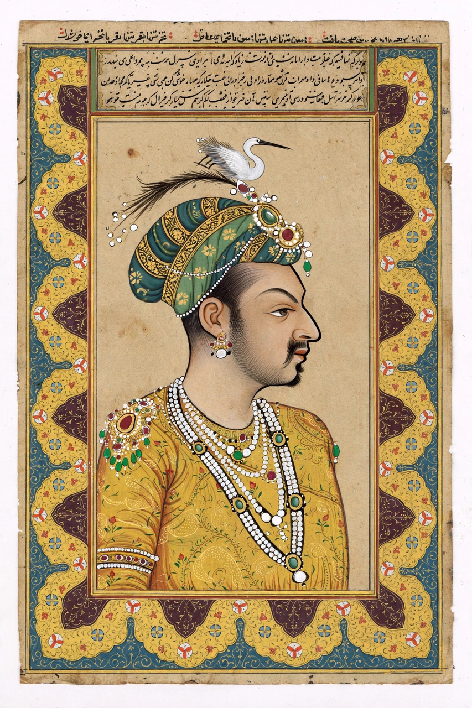

| Man Singh I | |
|---|---|
 Raja Man Singh I of Amber | |
| Raja of Amber | Reign 1589 – 1614 |
| Born | 21 December 1550, Amber, Rajputana |
| Died | 6 July 1614 (aged 63), Achalpur, Maharashtra |
| House | Kachhwaha |
| Father | Bhagwant Das |
| Religion | Hinduism |
Man Singh I (21 December 1550 – 6 July 1614) was a powerful Rajput noble of the Kachhwaha clan and the Raja of Amber (in present-day Rajasthan, India). A trusted general of the Mughal emperor Akbar, he rose to become one of the highest-ranking mansabdars of the empire, holding the rank of 7,000 zat — the highest attainable by a subject — and was counted among the Navaratnas, the nine gems of Akbar's court.
Man Singh was the son of Raja Bhagwant Das of Amber and the grandson of Raja Bharmal, who had allied his house with the Mughals through the marriage of his daughter — known to history as Mariam-uz-Zamani — to Akbar in 1562. Man Singh entered imperial service as a youth and distinguished himself in campaigns from an early age.
Man Singh fought in many of the empire's most important campaigns. In 1576 he commanded the Mughal army at the Battle of Haldighati against Maharana Pratap of Mewar; the battle was tactically inconclusive but strategically a Mughal success. He later led expeditions in the northwest against the Yusufzai and other Afghan tribes, and in 1594 he was appointed governor (subahdar) of Bengal, Bihar and Odisha, from where he subdued the Afghan chiefs of Bengal and campaigned in Odisha. His victories extended Mughal control over much of eastern India.
Succeeding his father in 1589, Man Singh beautified his capital with temples and palaces. He built the Govind Dev Ji temple at Vrindavan, one of the grandest Hindu temples of its era in northern India, and contributed to the fortifications and palaces of Amber Fort. A devout Vaishnavite, he patronised temples even while serving a Muslim emperor.
After Akbar's death in 1605, Man Singh initially backed Prince Khusrau against Jahangir, but was reconciled to the new emperor and continued in high office. He died on campaign in the Deccan in 1614.
Man Singh exemplifies the Rajput–Mughal synthesis of Akbar's empire: a Hindu raja who became the empire's foremost general while remaining a patron of Hindu religion and architecture. The town of Manpur and numerous temples are associated with his name.